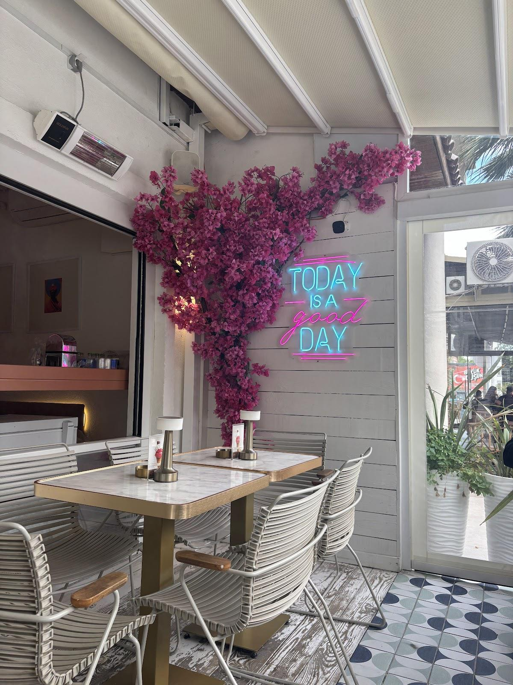

Kahve molası
Sıcak ve soğuk kahveler. İster alıştığınız bir fincan, ister serin bir ara.
SİNANOBA’DA KÜÇÜK BİR MOLA
Kahveyi söyleyin, sohbeti uzatın.
Günün güzel bir köşesini kendinize ayırın.

LEO’NUN MOLALARI
Kahve, tatlı ve mutfaktan
bir şeyler. Seçim sizin.
BULUŞMA NOKTAMIZ BELLİ
GOOGLE YORUMLARI
“Nefis tatlılarının neredeyse hepsini denedim.”
SİBEL BALTA
Google yorumunu aç ↗“Mimaroba’da el yapımı mükemmel tatlı ve kahve deneyimi için mutlaka uğramanız gereken tek nokta.”
alişan karaduman
Google yorumunu aç ↗Google yorumlarından kısa alıntılar. Puan ve yorum sayısı kontrol tarihindeki kaydı yansıtır.
Güncel saatler ve menü hakkında bilgi almak için bize ulaşabilirsiniz.